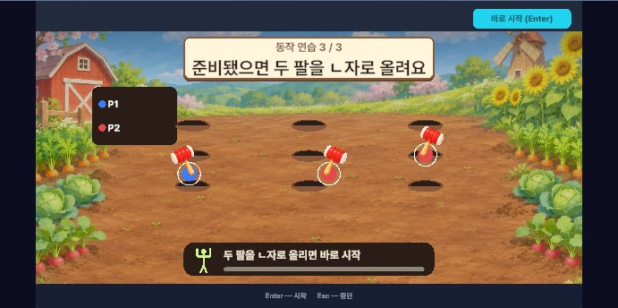
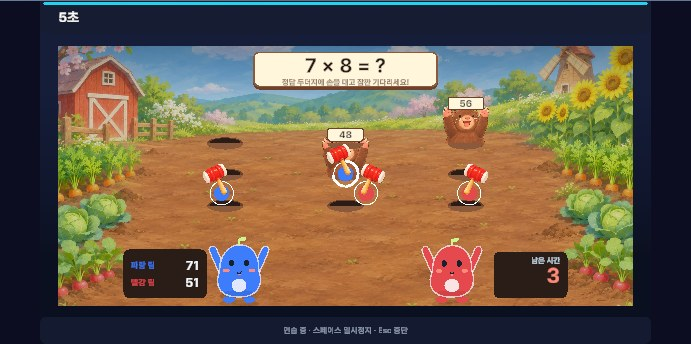

G017 정답 두더지 잡기 — C# 이식 확인
HTML 게임 「정답 두더지 잡기」(G017, 회원님이 주신 HTML 파일)를 이 저장소의 C# 틀(판정 → 감독 → 무대)로 옮겼습니다. 새 파일만 더했고 기존 파일은 고치지 않았습니다. 그래서 아직 앱 목록에는 안 뜹니다. 원본 소스를 끝까지 읽고 숫자를 그대로 옮겼습니다.
브랜치 열기 · 기준과 비교 · PR #46 · 진행 기록
변환 기록
- 2026-11-26 22:30앱에서 다시 확인(맥 에디터 · 흉내 장치, 연습 판) — 두 명 참가 → 연습 3단계(왼쪽 구멍 · 오른쪽 구멍 · ㄴ자 → 바로 시작) → 60초 경기. / 정답 두더지를 잡으면 점수가 오르고 오답이면 깎임, 모둠 합계 점수판이 따라옴. / 볼 것: 손을 내린 자세(손목이 엉덩이 높이)도 판 좌표로 1.3배 넓히면 가운데·아래 줄 구멍에 닿아, 가만히 있어도 아래 줄 두더지가 잡힘(흉내에서 실제로 생김). 아이들이 화면에서 서는 자리에 따라 다르므로 실물에서 확인 필요.PR #138
- 2026-11-26 10:50수정 요청 반영 — 준비 화면 「하는 방법」에 두더지 칸 둘(정답 두더지에 손 대기 · 두 팔 ㄴ자로 시작, 전엔 빌려 쓰는 점수 동작 「만세」 하나). 봇은 두더지가 보일 때부터 0.6~1.2초 생각하고 손을 천천히 옮기며, 「연습」 판은 2배 늦게. 안내 단계 동작 연습(#130)은 앱 화면으로 다시 확인PR #138
- 2026-11-22 21:40수정 요청 반영 — 시작 전 안내 카드 대신 실제 동작 연습(왼쪽·오른쪽 두더지에 손을 대고 원이 찰 때까지, 모두 통과하거나 한 명이 ㄴ자로 바로 시작) → 3초 → 경기. 잡는 방식은 경기와 같음PR #130
- 2026-11-06 19:11본줄기가 main으로 바뀌어 main을 합쳐 최신으로 맞추고 main 대상 PR을 열었다(server-checks 통과, 충돌 없음)PR #46
- 2026-11-06 12:29모둠마다 자기 색 콩콩이 — 자기 모둠이 정답을 잡으면 환호·오답이면 아쉬움·손이 보이면 만세, 끝나면 1등 모둠만 환호5823146
- 2026-11-06 12:19모둠 차례전 → 모둠 동시 진행 — 모든 모둠이 한 판·같은 문제로 60초 함께, 정답은 먼저 0.3초를 채운 손이 가져감, 모둠 점수판·손 동그라미 모둠 색, 쉬는 시간 없앰(경기 130초 → 62초). 체험판에 다른 모둠 자동 손33d7349
- 2026-11-06 11:20두더지(올라옴·잡힘·메롱)와 장난감 망치를 GPT로 그려 오린 그림으로 — 구멍에서 올라오게 흙선 아래를 잘라 보임, 그림이 없으면 코드 도형cba044f
- 2026-11-06 11:06처음 변환 — 카메라 손목으로 손 대고 0.3초 잡기, 모둠 차례전(차례 모둠 손만), 정답 +10·보너스·오답 −5, 문항 세트 넷, 봄 농장 밭 배경(GPT)471feb0
직접 해 보기
C# 판정과 같은 규칙과 숫자(구멍 9개, 보통 1.25초·최대 3마리·간격 0.72초, 손 대고 0.3초, 정답 +10 + 빠르기 보너스, 오답 −5, 모든 모둠이 함께 60초)로 움직입니다. 원본처럼 시작 화면에서 모둠 수·난이도·문항 세트를 고르고 시작합니다. 카메라 손 대신 마우스(또는 손가락)가 고른 모둠의 손이고, 나머지 모둠은 자동 손(체험판에만 있는 흉내, 0.6~1.5초 머뭇거린 뒤 대개 정답을 노림)이 같은 판에서 동시에 잡습니다. 하얀 원이 다 차면 잡히고, 먼저 채운 손이 가져갑니다. 「경기 20초」로 짧게 볼 수 있습니다. 2026-11-22부터 「경기 시작」을 누르면 앱처럼 먼저 동작 연습을 합니다 — 왼쪽 두더지 → 오른쪽 두더지에 마우스(손)를 대고 원이 찰 때까지, 그다음 시작 자세(앱: 두 팔 ㄴ자 · 체험판: L 키를 누르고 있기)나 Enter(선생님 「바로 시작」)로 3초 뒤 경기. 다른 모둠 자동 손은 카메라에 없는 봇처럼 연습을 바로 통과한 것으로 봅니다.
정답 두더지 잡기
위쪽 문제판에 문제가 나오면 구멍에서 보기를 든 두더지가 올라옵니다. 정답 두더지를 손으로 잡으세요. 아래에는 모둠마다 자기 색 콩콩이가 서서, 자기 모둠이 정답을 잡으면 환호하고 오답이면 아쉬워합니다. 망치 손잡이의 동그라미도 모둠 색입니다.
- 카메라 앞에 서서 두 손을 듭니다. 손 자리에 망치가 따라다닙니다.
- 정답 두더지 위에 손을 대고 하얀 원이 다 찰 때(0.3초)까지 기다리면 잡힙니다. 정답 +10점, 빨리 잡을수록 보너스!
- 오답 두더지를 잡으면 −5점입니다(0점 밑으로는 안 내려갑니다).
- 모든 모둠이 한 판에서 60초 동안 동시에 겨룹니다. 정답 두더지는 한 마리라 먼저 잡은 모둠이 점수를 얻고, 마지막에 모둠 점수로 순위를 봅니다.
경기 설정
안전 옆 사람과 팔 간격 비우기 · 한 번에 최대 6명
HTML판에서 달라진 것
| HTML판 | 앱판 | 까닭 |
|---|---|---|
| 웹캠 손 인식(MediaPipe, 손가락까지) | 앱 카메라 골격의 손목. 손목 둘(왼손·오른손)이 손 자리 | 앱은 몸 골격만 본다. 범위 「보통」(1.3배)은 그대로 |
| 잡는 동작: 손 대고 0.3초 / 주먹 쥐기 | 손 대고 0.3초만 | 골격에는 손가락이 없어 주먹을 알 수 없다 |
| 터치·마우스(전자칠판)로도 잡기 | 옮기지 않음 | 앱에는 화면 터치 입력이 없다 |
| 모둠마다 한 명이 나와 릴레이, 「시작」 단추와 3·2·1 | 모둠 동시 진행(앱 모둠 기능): 모든 모둠이 한 판·같은 문제로 60초 동안 함께. 손 동그라미가 모둠 색, 정답은 먼저 0.3초를 채운 손이 가져감. 시작 전 세기는 앱 몫 | 회원님 「모둠이 동시 진행되도록」(11-06, 처음엔 차례전이었다). 차례·쉬는 시간이 없어 경기가 짧아짐(2모둠 130초 → 62초) |
| 모둠 점수(0점 밑으로 안 감) | 잡은 사람 점수로 붙고 앱이 모둠 합계로. 0점 바닥은 사람마다 | 앱 점수표(ScoreBook)가 사람 점수를 0 밑으로 안 내린다 |
| 정답 +10 + 보너스(10 − 지난 초) | 정답 Touch +10, 보너스는 Press +1을 보너스만큼, 오답 Shake −5 | 앱 규칙 파일은 동작마다 점수가 정해져 있다 |
| 설정: 구멍 6·9·12, 45·60초, 문항 세트 넷 | 규칙 파일 flow.answerMoleHoles·answerMolePlaySeconds·answerMoleSet(초안은 9개·60초·구구단) | 설정 값은 규칙 파일이 쥔다 |
| 사람 캐릭터(팔이 손을 따라옴), 두더지·망치는 코드 도형 | 모둠마다 자기 색 콩콩이(자기 모둠 정답에 환호·오답에 아쉬움, 끝나면 1등 모둠이 환호). 두더지(올라옴·잡힘·메롱)와 장난감 망치는 GPT로 그려 오린 그림, 그림이 없으면 코드 도형 | 앱 기본 캐릭터. 팔을 그리려면 공용 QuizArt를 고쳐야 해서 안 함 |
| 배경 내 모습 흐리게 | 옮기지 않음, 대신 봄 농장 밭 배경 그림 | 카메라 화면을 저장·표시하지 않는 앱 규칙 |
그대로 옮긴 것: 구멍 배치(6·9·12), 난이도 세 단계 값, 올라온 시간 ×0.9~1.1, 정답이 2.2초 넘게 안 나왔으면 꼭 정답·아니면 38%, 같은 보기 겹침 없음, 정답 하나만, 정답을 잡으면 나머지 내려가고 0.45초 뒤 다음 문제·0.55초 새 두더지 없음, 올라온 정도 45% 넘어야 잡힘, 잡는 자리 모양, 문항 세트 넷(구구단·영어 단어·맞춤법·체육 용어), 모둠 색 넷.
새 파일
| 파일 | 무엇 |
|---|
앱에서 해 본 것 (2026-11-26 · 다시 확인)
맥 Unity 에디터 SessionTest Play, 가지 claude/fixes-1126(PR #138)에 최신 main을 합친 55aa86e, 연습 판(기록·순위에 안 올림). 카메라는 실물이 아니라 앱 안의 시험 장치(CameraPoseHost.StartWithForTest + FakePoseEstimator)로 골격만 넣었습니다 — 맥 카메라는 켜지 않았습니다. 골격 → 참가 → 판정 → 점수는 실제 코드입니다.
- 두 명 참가 → 연습 3단계(왼쪽 구멍 · 오른쪽 구멍 · ㄴ자 → 바로 시작) → 60초 경기.
- 정답 두더지를 잡으면 점수가 오르고 오답이면 깎임, 모둠 합계 점수판이 따라옴.
- 볼 것: 손을 내린 자세(손목이 엉덩이 높이)도 판 좌표로 1.3배 넓히면 가운데·아래 줄 구멍에 닿아, 가만히 있어도 아래 줄 두더지가 잡힘(흉내에서 실제로 생김). 아이들이 화면에서 서는 자리에 따라 다르므로 실물에서 확인 필요.


검증한 것과 안 한 것
- 통과 판정·감독 검사 33건과 무대 검사 6건. .NET 8, C# 9, 경고를 오류로, NUnit 3.14. 이 저장소의 실제 파일(
Core/Input넷,MatchActorKey,Participant·ParticipantRoster,SessionStateMachine,PoseSkeleton)과 함께 묶었습니다. - 골격으로 잡기 감독 검사는 손을 직접 놓지 않고 골격 손목 좌표만 넣어 정답 두더지를 잡은 뒤, Touch 1번과 보너스만큼의 Press가 흘러가는지 봅니다.
- 빨간불 확인 판정 규칙 26개(경기 시간 · 예정 시각에서 끝 · 시간 끝 · 시작하면 바로 문제 · 끝나면 내려감 · 최대 마릿수 · 간격 · 정답 뒤 잠금 · 정답 꼭 나오기 · 정답 하나만 · 보기 겹침 · 기다리기 · 같은 두더지에만 쌓기 · 보너스 셈 · 보너스 0 바닥 · 다른 두더지 내려감 · 다음 문제 · 오답 0점 바닥 · 올라와야 잡힘 · 손목 위아래 · 정원 · 보너스 Press 여러 번 · 끝 순간 · 모둠 넘기기 · 손목 신뢰도 · 보너스 알림)를 하나씩 끄면 각각 검사가 실패했고, 되돌리면 모두 다시 통과했습니다. 잡힌 두더지를 또 잡지 못하게 하는 두 겹(
Hit앞 상태 확인,MoleAt의 올라온 두더지만 고르기)은 하나만 끄면 다른 쪽이 막아 결과가 같아서, 둘을 함께 끄고 「먼저 채운 손이 잡는다」 등 3건이 실패하는 것을 봤습니다. - 컴파일 무대
UguiAnswerMoleStage를 이 저장소의 실제QuizArt.cs와, 나머지 원본 함수의 실제 선언과 같은 모양의 대역에 대고 컴파일했습니다(경고 0, 오류 0). - 안 함 Unity 실행기, 실제 엔진 컴파일, 앱 화면 촬영, 실물 카메라(손목이 두더지에 닿는 높이), 윈도 PC.
앱에 붙이려면
- 규칙:
FlowType맨 뒤에AnswerMole,GameRuleSet에flow.answerMoleMode(easy·normal·hard)·answerMoleSet(times·english·spelling·pe)·answerMoleHoles·answerMolePlaySeconds, 검증기와 스키마(장치 Camera, 모둠전 허용, 감점 규칙). - 세션:
IsNativeActivity에 넣어 기기 입력이 점수로 바로 가지 않게. 감독의Award만HandleActivityInput으로 — 모둠 합계는 기존 팀 집계가 합니다. - 화면:
UguiNativeActivities에 감독·무대. 장면마다SyncRoster→SyncPoses(골격·자리 번호, 색깔 띠와 같은SnapshotPlayPoses) →Tick→Sync, 그리고stage.Backdrop = _hud.StageArt;, 두더지·망치는 규칙 파일assets.icons(mole_up·mole_hit·mole_wrong·hammer)를GameArt로 읽어MoleUpArt·MoleHitArt·MoleWrongArt·HammerArt에. 모둠 배정이SyncRoster보다 먼저여야 합니다. - 출시:
GameTitles(제목에 「G017」), 표지, 출시 목록 검사, 포털 사본. 규칙 파일 초안 셋(2·3·4모둠)과 그림(배경bg.jpg, 두더지 셋·망치assets/images/*.png)을StreamingAssets/games/아래로. - 말 표 12개 언어:
answerMole.hint·time·bonus·wrong·team.blue/red/yellow/purple/all(진행 기록에 ko·en).
실물에서 봐 주셨으면 하는 것
- 손이 닿는 높이 — 손목 좌표를 원본처럼 가운데에서 1.3배 넓혔습니다(
HandZoom). 교실 카메라 자리에서 위 줄 구멍까지 팔이 닿는지, 너무 예민하지 않은지. - 여러 모둠이 한 화면에 — 카메라 한도 6명이 다 서면 서로 팔이 겹치는지, 손목이 다른 사람과 바뀌어 잡히지 않는지. 3모둠·4모둠이면 모둠마다 1~2명만 설 수 있습니다.
- 두더지가 흙 위에서 보이는지 — 갈색 두더지 그림과 갈색 밭 배경. 그림에 짙은 윤곽이 있고 팻말이 크게 떠 있지만 교실 화면에서 확인이 필요합니다. 두더지 크기(구멍 반지름의 3.2배)도 손잡이 값입니다.
- 한 판에서 먼저 잡기 경쟁이라 화면 가운데 구멍에 손이 몰리는지, 두더지 마릿수(보통 최대 3)를 늘려야 하는지.